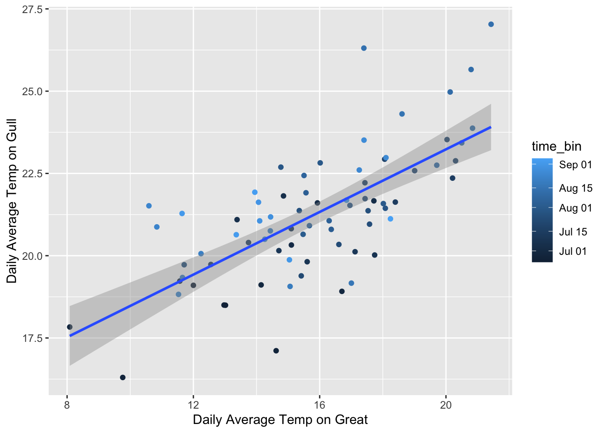

nightdater <- function (colIn) {
nightdate <- as.Date(trunc(colIn - ifelse(lubridate::hour(colIn) < 8, 86400, 0), by = "days"))
return(nightdate)
}Data Description/Exploration
Helper Functions
The nightdater function created rounds early-morning datetimes back to the previous night, creating a night of date. For example, a bird tagged at 23:00 on July 15 and a bird tagged at 3:00 on July 16 would both be considered tagged on the night of July 15
Weather Data
Our weather data from 2025 was collected via Kestrel 5500 weather meters. We had one on Gull Island, one on Great Island, and one on Baccalieu Island. We had persistent problems with the wind-measuring propellers breaking or getting jammed, so our record for wind data in particular is incomplete. One goal would be to compare the wind data that we do have to publicly available wind data, to see if the public data is an adequate replacement.
Great Island kestrel coordinates: N47 11.26, W59 49.03 (same as light meter)
Gull Island kestrel coordinates: N47 15.6, W52 46.54
Baccalieu Island kestrel coordinates: N48 -7.32, W52 47.89 (same as light meter)
Standardization of units for comparison.
In order for proper comparison to occur some values will have to be converted to different units due to differences in standards established by the lab for the Kestrel 5500 and the St. John’s International Airport. From here on out, the standard is as follows.
| Variable | Unit |
|---|---|
| datetime | YYYY-MM-DD hh:mm:ss |
| temperature | °C |
| station_pressure | kPa |
| barometric_pressure | kPa |
| wind_speed | km/h |
| wind_chill | °C |
| relative_humidity | % |
| dew_point | °C |
Read in Kestrel data
Read in the data so the date and time readings are datetime objects and in Newfoundland time.
The Gull Island and Great Island kestrels had long periods where their wind impellers were broken. We also typically turned the kestrels on before they were deployed and did not turn them off until several days after retrieval, so I will trim the data to remove the extra days, and replace the ‘0’ wind speed with NA where the impellers were broken.
baccalieu_weather <- read_csv("data/baccalieu_2025_weather.csv", show_col_types = FALSE) %>%
mutate(datetime = as_datetime(Time, format = "%m/%d/%Y %H:%M")) %>%
mutate(datetime = force_tz(datetime, tzone = "America/St_Johns")) %>%
filter(datetime > "2025-06-10" & datetime < "2025-10-21") %>%
select("datetime", "Temp", "Station P.", "Baro.", "Wind Speed", "Wind Chill", "Rel. Hum.", "Dew Point") %>%
rename(
temperature = "Temp",
station_pressure = "Station P.",
barometric_pressure = "Baro.",
wind_speed = "Wind Speed",
wind_chill = "Wind Chill",
relative_humidity = "Rel. Hum.",
dew_point = "Dew Point"
) %>%
mutate(
station_pressure = station_pressure/10,
barometric_pressure = barometric_pressure/10,
wind_speed = wind_speed*3.6
)
gull_weather <- read_csv("data/gull_2025_weather.csv", show_col_types = FALSE) %>%
mutate(datetime = as_datetime(Time, format = "%m/%d/%Y %H:%M")) %>%
mutate(datetime = force_tz(datetime, tzone = "America/St_Johns")) %>%
filter(datetime > "2025-06-16" & datetime < "2025-10-29") %>%
mutate(`Wind Speed` = NA) %>% ## This impeller never worked
select("datetime", "Temp", "Station P.", "Baro.", "Wind Speed", "Wind Chill", "Rel. Hum.", "Dew Point") %>%
rename(
temperature = "Temp",
station_pressure = "Station P.",
barometric_pressure = "Baro.",
wind_speed = "Wind Speed",
wind_chill = "Wind Chill",
relative_humidity = "Rel. Hum.",
dew_point = "Dew Point"
) %>%
mutate(
station_pressure = station_pressure/10,
barometric_pressure = barometric_pressure/10,
wind_speed = wind_speed*3.6
)
great_weather <- read_csv("data/great_2025_weather.csv", show_col_types = FALSE) %>%
mutate(datetime = as_datetime(Time, format = "%m/%d/%Y %H:%M")) %>%
mutate(datetime = force_tz(datetime, tzone = "America/St_Johns")) %>%
filter(datetime > "2025-06-23" & datetime < "2025-09-05") %>%
mutate(`Wind Speed` = if_else(datetime > "2025-07-19", NA, `Wind Speed`)) %>%
select("datetime", "Temp", "Station P.", "Baro.", "Wind Speed", "Wind Chill", "Rel. Hum.", "Dew Point") %>%
rename(
temperature = "Temp",
station_pressure = "Station P.",
barometric_pressure = "Baro.",
wind_speed = "Wind Speed",
wind_chill = "Wind Chill",
relative_humidity = "Rel. Hum.",
dew_point = "Dew Point"
) %>%
mutate(
station_pressure = station_pressure/10,
barometric_pressure = barometric_pressure/10,
wind_speed = wind_speed*3.6
)Light Data
Our light meters are Unihedron SQM-LU-DL (Sky Quality Meter Lens USB DataLogger) light meters, made for measuring nighttime light pollution. They measure light in Magnitudes per Arcsecond Squared, which is an astronomical measurement; magnitudes relates to star brightness (the sun’s magnitude is -27, Sirius has a magnitude of -1, Polaris has a magnitude of 2). Arc-seconds relate to how the night sky is divided into minutes and seconds; a square arc-second is a one-second by one-second area of the sky. If you could divide the light of a star with a magnitude of 20 (very dim; Pluto’s largest moon has a magnitude of 16) evenly over one square arcsecond, the MPSAS reading would be 20. The scale is negative, with higher values being darker. A sky with an MSAS reading of 5 (the cutoff for our meters) would be around sunset. Our night skies on dark nights are typically around 21 MPSAS, and the darkest night skies on earth read around 25. Each increase of 1 MPSAS means 2.5 times less light is coming from the sky; a sky measured at 5 MPSAS is 100 times brighter than a sky measured at 10 MPSAS.
We had one light meter on Great Island (for Witless Bay) in 2025 and one on Baccalieu. Not much data trimming needed here; I’ve done some pre-processing of the data already, and the light meters have been much less finicky than the weather meters.
baccalieu_light <- read_csv("data/baccalieu_light_20251023.csv", show_col_types = FALSE)
witless_light <- read_csv("data/witless_light_20250913.csv", show_col_types = FALSE)One thing that may prove useful is filtering the light data for before/after (etc) nautical or astronomical twilight. The dataframes have a sun elevation variable; nautical night begins when the sun is 12 degrees below the horizon, and astronomical night begins when the sun is 18 degrees below the horizon.
Sunrise and Sunset times
For doing anything with light data, it can be useful to have a list of sunrise and sunset times. Our islands are not so far apart that these need to be calculated separately. The package “StreamMetabolism” has a very useful function for calculating sunrise and sunset as new columns using a date column. However, the function is slow and computationally heavy, so I usually make a list of sunrise and sunset times for our study period, then join that list to other dataframes as needed.
suntimes <- as.data.frame(seq(ymd("2025-06-01"), ymd("2025-10-31"), by = "1 day")) %>%
rename(date = 1)
suntimes <- suntimes %>%
mutate(lat = 47.58) %>%
mutate(lon = -52.71) %>%
rowwise() %>%
mutate(sunrise.set(lat = lat, long = lon, date = date + lubridate::days(1), timezone = "America/St_Johns")) ## Adding one day is necessary to get sunset for the given date rather than the night beforeNext Steps
For next steps, feel free to do some basic data exploration/visualization of the weather data that we do have. Then I would start looking for useful publicly available weather data, and get those data into R and into useful formats for comparison with our data.
Example: How well does temperature correlate among the islands?
great_temp <- great_weather %>%
mutate(island = "Great") %>%
select(island, datetime, temperature)
gull_temp <- gull_weather %>%
mutate(island = "Gull") %>%
select(island, datetime, temperature)
bac_temp <- baccalieu_weather %>%
mutate(island = "Baccalieu") %>%
select(island, datetime, temperature)
temp <- rbind(great_temp, gull_temp, bac_temp)
temp %>%
mutate(time_bin = round_date(datetime, "1 day")) %>%
group_by(time_bin, island) %>%
summarize(mean_temp = mean(temperature)) %>%
filter(island %in% c("Great", "Gull")) %>%
group_by(time_bin) %>%
filter(n() == 2) %>%
pivot_wider(names_from = island, values_from = mean_temp) %>%
ggplot(aes(x = Great, y = Gull, color = time_bin)) +
geom_point() +
geom_smooth(method = "lm") +
ylab("Daily Average Temp on Gull") +
xlab("Daily Average Temp on Great")`summarise()` has regrouped the output.
`geom_smooth()` using formula = 'y ~ x'
ℹ Summaries were computed grouped by time_bin and island.
ℹ Output is grouped by time_bin.
ℹ Use `summarise(.groups = "drop_last")` to silence this message.
ℹ Use `summarise(.by = c(time_bin, island))` for per-operation grouping
(`?dplyr::dplyr_by`) instead.Warning: The following aesthetics were dropped during statistical transformation:
colour.
ℹ This can happen when ggplot fails to infer the correct grouping structure in
the data.
ℹ Did you forget to specify a `group` aesthetic or to convert a numerical
variable into a factor?
The correlation is pretty tight, although the Gull Island kestrel usually recorded warmer temperatures (it was much more protected and further inland.).
St. John’s International Airport Weather Data Wrangling
file_list = list.files("SJIA_weather_data")
airport_weather_data = as_tibble(read.csv(paste0("SJIA_weather_data/", file_list[1])))
for(i in 2:length(file_list)) {
temp_weather_data = as_tibble(read.csv(paste0("SJIA_weather_data/", file_list[i])))
airport_weather_data = bind_rows(airport_weather_data, temp_weather_data)
}